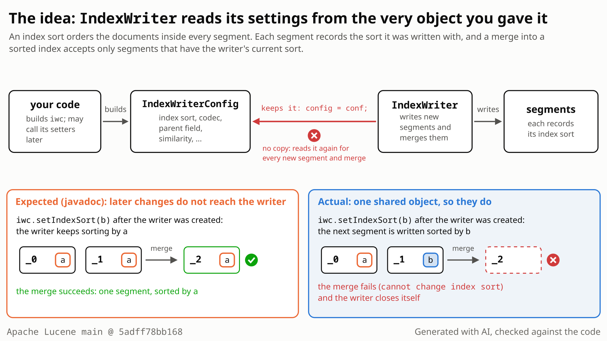

The writer keeps your config object (config = conf;) and every new in-memory segment reads the codec, index sort and parent field from it again. No setter refuses a change. So a late change reaches new segments only, while the checks made when the writer opened, and the values it copied then, keep the old setting.
- You build an
IndexWriterConfigand pass it tonew IndexWriter(dir, conf). A few settings are live and may change later (RAM buffer, max buffered docs, merge policy); the rest are meant to be fixed at creation (codec, index sort, parent field, soft-deletes field, similarity). - The writer collects new documents in in-memory segments. Each one starts with the codec, index sort and parent field it reads from the config and is later written to disk as a segment.
- A merge rewrites several segments into one. It requires them to share one index sort and one parent field, which Lucene also checks when a writer opens an existing index.

![Diagram of the repro: an IndexWriterConfig with index sort a is passed to new IndexWriter; the writer keeps the same object (config = conf). Segment _0 is flushed sorted by a. Then iwc.setIndexSort(b) is called on that object, which the javadoc says has no effect; segment _1 is flushed sorted by b. forceMerge(1) fails with 'cannot change index sort from <long: "a"> to <long: "b">', a tragic merge failure, and the writer closes itself. The same happens with a late parent field, soft-deletes field or codec. Fix direction: the late setter throws IllegalStateException, or the writer copies the settings when it is created.](../assets/LFV-580/bug.png)
setIndexSort gives the second segment sort b, and the merge fails and closes the writer. Select the still to open it at full size. Generated with AI, checked against the code.- Create a writer with an index sort on field
a, add 1 document and commit: one segment, sorted bya. - Call
setIndexSortwith a sort on fieldbon the same config object. TheIndexWriterConfigclass javadoc says: "changes to this object will not affect the IndexWriter instance". - Add 1 more document and call
forceMerge(1). You expect the merge to succeed and the index to stay sorted bya. - Instead the second segment is sorted by
b, because every new in-memory segment reads the sort from your config object. The merge throwscannot change index sort from <long: "a"> to <long: "b">and the writer closes itself:isOpen()is false, and the rollback to the last commit loses the uncommitted document. - Same cause, other setters: with single documents and no index sort, a late
setParentField(null)makes every later merge that mixes segments from before and after the change fail, even in a new, correctly configured writer; a latesetSoftDeletesField("flag")drops a document that was never deleted (numDocs0, expected 1).
Code that keeps its IndexWriterConfig after creating the writer (or casts getConfig() back to it) and later calls a setter the javadoc says has no effect. The damage needs the opt-in index sort, parent field or soft deletes; late codec and similarity changes are silent. Two documents suffice, deterministic. Rare: not found in Elasticsearch, OpenSearch or Solr.
Mechanism, terms and numbers780 words
The IndexWriterConfig class javadoc says: "Once IndexWriter has been created with this object, changes to this object will not affect the IndexWriter instance", and eight setters add "Only takes effect when IndexWriter is first created". Since 4.9.0 (LUCENE-5708) the writer keeps the caller's object instead of a copy (config = conf;) and reads the codec, index sort, parent field, similarity and soft-deletes field from it again for every new in-memory segment, and no setter refuses a change. A late setIndexSort therefore gives new segments another sort, and the next merge that includes an older segment fails with IllegalArgumentException: cannot change index sort and closes the writer; after a commit, no writer with the original sort can open the index. With single documents and no index sort, a late setParentField(null) makes every later merge that mixes segments from before and after the change fail, also in new writers configured like the first one, and a late setSoftDeletesField can make a never-deleted document vanish. The aliasing is in every release from 4.9.0 to 10.6.0 and main; each effect starts with its setter (index sort 6.2.0, soft-deletes field 7.4.0, parent field 9.10.0).
- The writer keeps the caller's object. The constructor does
conf.setIndexWriter(this); config = conf;(IndexWriter.java:947-948) and copies only a few values out: the info stream (:949),softDeletesEnabled(:950), the event listener (:951) and the merge scheduler (:959).getConfig()returns the same object (:1284-1287). - Nothing guards the setters.
setIndexWriter(IndexWriterConfig.java:126-133) records the writer in aSetOnceonly to refuse a second writer ("do not share IndexWriterConfig instances across IndexWriters").setIndexSort(:505-516),setSoftDeletesField(:567-570),setParentField(:590-593),setCodec(:297-303) and the other setters assign their field without checking it. - Every new in-memory segment re-reads the config.
DocumentsWriterhands the writer'sconfigto each newDocumentsWriterPerThread(DocumentsWriter.java:118-134), which reads the codec (DocumentsWriterPerThread.java:160), the index sort into the newSegmentInfo(:180) and the parent field (:200,IndexingChain.java:166-167). The similarity is read per field (IndexingChain.java:1533), the soft-deletes field again at flush (DocumentsWriterPerThread.java:487-488). - The checks assume one setting per index. The sort check
validateIndexSort(IndexWriter.java:1213-1229) runs only in the constructor (:1133). A merge takes codec and sort for the merged segment from the live config (:5333,:5337) and compares each source segment's sort withconfig.getIndexSort()invalidateMergeReader(:3245-3251, called at:5497): the older segment, sorted bya, fails againstb, while a merge of only later segments passes. A merge failure (anything but an abort) is a tragic event that closes the writer (:5108-5112).FieldInfos.getAndValidateParentField(FieldInfos.java:220-235) requires one parent field across merged segments, so only a merge that mixes segments from before and after the change fails. For soft deletes, the deleted count includes the recorded soft-delete count (PendingDeletes.java:243-245), so a segment whose other document is deleted counts as fully deleted and is dropped, while the writer's readers, set up from the creation-time values (IndexWriter.java:950,:1156,:1267-1269), never hid that document.
| late call | what happens |
|---|---|
setParentField(null) on a writer created with "_parent", 1 document before and 1 after | the new segment has no parent field; forceMerge(1) fails with IllegalStateException: expected parent doc field to be "_parent " across all segments but found a segment with different field "null" and closes the writer; a new writer configured with "_parent" cannot merge the committed index into one segment either, a writer without a parent field cannot open it, and CheckIndex at the default level reports it clean |
setSoftDeletesField("flag") on a writer created without soft deletes | the flush records the document that carries a flag doc value as soft-deleted (softDelCount=1) while readers show it live; deleting the other document of that segment drops the segment: numDocs 0, expected 1 |
setCodec(other) | later segments are written with the other codec (expected:<[Lucene104]> but was:<[OtherCodecName]>) |
Reach of the parent-field case: it needs single documents and no index sort. With a document block in the older segment the merge succeeds; with index sort plus blocks the next addDocuments throws a clear error (independent reproducer, main a9779ef3c193). The mixed-sort index can be recovered by opening it with no index sort, which loses the sort. In the finder's probe a late setSimilarity changed the norms of new segments (42 vs 5), setCommitOnClose(false) made close() skip the commit and setLeafSorter reordered near-real-time leaves; the reviewers did not re-run those three.
Exposure and likelihood372 words
- What breaks. Index sort: the first merge across old and new segments fails and closes the writer, and the rollback loses its uncommitted documents; after a commit, no writer configured with the original sort (or the late one) can open the index ("cannot change previous indexSort"); a writer with no index sort can open and merge it, losing the sort. Parent field (single documents, no index sort): every merge that mixes segments from before and after the change fails, also in later, correctly configured writers, so the index can never be merged into one segment, and CheckIndex at the default level calls the index clean. Soft deletes: a document that was never deleted disappears after an unrelated delete. Codec and similarity: later segments silently use the new codec or norms.
- Who is hit. Code that keeps its config after
new IndexWriter(dir, conf)and calls a non-live setter later: an ordering mistake (setters applied after the writer is built) or a deliberate "reconfigure" of a settings object the application keeps. The javadoc tells such callers this is harmless. Defaults never trigger it; the damaging settings are opt-in (index sort, parent field for document blocks, soft deletes). - Scale and determinism. None needed: two documents, one thread, the same result with assertions on and off and at every seed tried.
- How likely: rare. Elasticsearch, OpenSearch and Solr build a fresh config per writer and were not found changing a non-live setting later (read, not exhaustive), and nobody has reported it since 4.9. One open, unmerged OpenSearch PR (#17495, "Make multiple settings dynamic for Merge on Flush") casts
getConfig()toIndexWriterConfigto changesetMaxFullFlushMergeWaitMillison a live writer, so downstream code has proposed relying on the aliasing (not in a release). - A further executed effect, lower confidence. On a writer created with soft-deletes field
sd, a latesetSoftDeletesField(null)or("other"), then documents that arrive soft-deleted and one delete, madeforceMergewrite a segment withmaxDoc11 but 8 stored documents: fetching documents 8-10 throwsIndexOutOfBoundsException, later merges fail, and default-level CheckIndex reports the index clean (level 3 reports it broken). Run with assertions off on maina9779ef3c193and 10.5.2, and once more in a later re-check; the independent reviewers did not run it.
One JUnit test, one method, public API, one thread, two documents. A writer sorted by a, one committed document, a late setIndexSort by b, one more document, forceMerge(1). SerialMergeScheduler keeps the merge on the test thread. It fails with assertions on and off, at every seed tried.
/*
* Licensed to the Apache Software Foundation (ASF) under one or more
* contributor license agreements. See the NOTICE file distributed with
* this work for additional information regarding copyright ownership.
* The ASF licenses this file to You under the Apache License, Version 2.0
* (the "License"); you may not use this file except in compliance with
* the License. You may obtain a copy of the License at
*
* http://www.apache.org/licenses/LICENSE-2.0
*
* Unless required by applicable law or agreed to in writing, software
* distributed under the License is distributed on an "AS IS" BASIS,
* WITHOUT WARRANTIES OR CONDITIONS OF ANY KIND, either express or implied.
* See the License for the specific language governing permissions and
* limitations under the License.
*/
package org.apache.lucene.index;
import org.apache.lucene.document.Document;
import org.apache.lucene.document.NumericDocValuesField;
import org.apache.lucene.search.Sort;
import org.apache.lucene.search.SortField;
import org.apache.lucene.store.ByteBuffersDirectory;
import org.apache.lucene.store.Directory;
import org.apache.lucene.tests.util.LuceneTestCase;
public class TestIndexWriterConfigChangeAfterWriterCreation extends LuceneTestCase {
public void testSetIndexSortAfterWriterCreationHasNoEffect() throws Exception {
Sort byA = new Sort(new SortField("a", SortField.Type.LONG));
Sort byB = new Sort(new SortField("b", SortField.Type.LONG));
try (Directory dir = new ByteBuffersDirectory()) {
IndexWriterConfig iwc =
new IndexWriterConfig().setIndexSort(byA).setMergeScheduler(new SerialMergeScheduler());
IndexWriter w = new IndexWriter(dir, iwc);
w.addDocument(doc());
w.commit(); // one segment, sorted by a
// IndexWriterConfig javadoc: "Once IndexWriter has been created with this object, changes to
// this object will not affect the IndexWriter instance."
try {
iwc.setIndexSort(byB);
} catch (IllegalStateException _) {
// refusing the change keeps that promise too
}
w.addDocument(doc()); // a second segment, flushed by forceMerge
try {
w.forceMerge(1);
} catch (IllegalArgumentException e) {
throw new AssertionError("forceMerge(1) failed; writer still open: " + w.isOpen(), e);
}
w.close();
try (DirectoryReader r = DirectoryReader.open(dir)) {
assertEquals(byA, r.leaves().get(0).reader().getMetaData().sort());
}
}
}
private static Document doc() {
Document doc = new Document();
doc.add(new NumericDocValuesField("a", 1));
doc.add(new NumericDocValuesField("b", 1));
return doc;
}
}
cd $LUCENE
cp $REPRO/TestIndexWriterConfigChangeAfterWriterCreation.java lucene/core/src/test/org/apache/lucene/index/
./gradlew :lucene:core:test --tests org.apache.lucene.index.TestIndexWriterConfigChangeAfterWriterCreation -Ptests.seed=DEADBEEF
# the same with -Ptests.asserts=false fails the same way
- Expected
forceMerge(1)succeeds and the merged index is sorted bya(or the latesetIndexSortthrowsIllegalStateException).- Observed
AssertionError: forceMerge(1) failed; writer still open: false, caused byIllegalArgumentException: cannot change index sort from <long: "a"> to <long: "b">.
More files, environment, full output243 words
Put the file in lucene/core/src/test/org/apache/lucene/index/ and run the command below. It sits in org.apache.lucene.index like the upstream tests but uses nothing package-private, and it passes ./gradlew :lucene:core:check -x test (formatting, ecj lint, forbidden APIs). The late setter is wrapped so that a fix which makes it throw IllegalStateException also passes: refusing the change keeps the javadoc's promise as well. It uses the unnamed catch variable _ (Java 22+), as main's tests do; on a Java 21 branch name it ignored.
The test framework picks a random codec; the failure does not depend on it: seeds DEADBEEF (assertions on and off), 1, C0FFEE and 5EED0580 (off), which chose different test codecs, all fail the same way. It also fails on the released 10.6.0 and 10.5.2; it compiles from 10.0 on (LeafMetaData.sort()).
Regression test: this same test; it passes with the recommended fix, assertions on and off.
| lucene | main 5adff78bb168 (12.0.0-SNAPSHOT); the same test fails on the released 10.6.0 and 10.5.2 |
|---|---|
| jdk | OpenJDK 25.0.3 |
| os | Linux, aarch64 |
# gradle, main 5adff78bb168 (the same with -Ptests.asserts=false)
TestIndexWriterConfigChangeAfterWriterCreation > testSetIndexSortAfterWriterCreationHasNoEffect FAILED
java.lang.AssertionError: forceMerge(1) failed; writer still open: false
at __randomizedtesting.SeedInfo.seed([DEADBEEF:15FD3007A060796A]:0)
at org.apache.lucene.index.TestIndexWriterConfigChangeAfterWriterCreation.testSetIndexSortAfterWriterCreationHasNoEffect(TestIndexWriterConfigChangeAfterWriterCreation.java:51)
Caused by:
java.lang.IllegalArgumentException: cannot change index sort from <long: "a"> to <long: "b">
at org.apache.lucene.index.IndexWriter.validateMergeReader(IndexWriter.java:3250)
at org.apache.lucene.index.IndexWriter.mergeMiddle(IndexWriter.java:5497)
at org.apache.lucene.index.IndexWriter.merge(IndexWriter.java:5080)
at org.apache.lucene.index.IndexWriter$IndexWriterMergeSource.merge(IndexWriter.java:6883)
at org.apache.lucene.index.SerialMergeScheduler.merge(SerialMergeScheduler.java:38)
at org.apache.lucene.index.IndexWriter.executeMerge(IndexWriter.java:2451)
at org.apache.lucene.index.IndexWriter.maybeMerge(IndexWriter.java:2446)
at org.apache.lucene.index.IndexWriter.forceMerge(IndexWriter.java:2281)
at org.apache.lucene.index.IndexWriter.forceMerge(IndexWriter.java:2229)
at org.apache.lucene.index.TestIndexWriterConfigChangeAfterWriterCreation.testSetIndexSortAfterWriterCreationHasNoEffect(TestIndexWriterConfigChangeAfterWriterCreation.java:49)
# with the recommended fix: the late setIndexSort throws IllegalStateException, the test passes (assertions on and off)- Class javadoc: "changes to this object will not affect the IndexWriter instance"; eight setters add "Only takes effect when IndexWriter is first created".
- At open, Lucene refuses a changed index sort ("cannot change previous indexSort") or soft-deletes field with a clear error.
- LUCENE-2960 promised late changes "will have no effect on IW"; LUCENE-5708 dropped the copy, not the javadoc.
The full argument322 words
- The contract.
IndexWriterConfig.java:38-41: "Once IndexWriter has been created with this object, changes to this object will not affect the IndexWriter instance. For that, use LiveIndexWriterConfig that is returned from IndexWriter#getConfig()". The setters of the open mode, deletion policy, index commit, similarity, merge scheduler, codec, reader pooling and doc-values overlays add "Only takes effect when IndexWriter is first created" (:158,:219,:239,:256,:277,:295,:322,:344). The constructor javadoc: "If you want to make "live" changes to this writer instance, use getConfig()" (IndexWriter.java:932-933).CHANGES.txt:15965-15967(LUCENE-4132): "IndexWriterConfig is used only for initializing the IndexWriter". - The design history. LUCENE-2960 (#4034, 2011-03-14), Michael McCandless: "IW continues cloning the incoming IWC on init, as it does today. This means any changes to the IWC instance you passed to IW will have no effect on IW." LUCENE-4132 (#5204, 2012-06-13), Shai Erera: "now compile-wise, we don't let even expert users change non-live settings". The javadoc sentence dates from LUCENE-4132, when the writer still copied the config.
- Lucene refuses these changes elsewhere. Opening an index with a different sort throws "cannot change previous indexSort" (
IndexWriter.java:1213-1229); LUCENE-8335 (CHANGES.txt:7482-7483): the soft-deletes field "can't be changed after the fact"; a parent field cannot be added to an existing index without one (IndexWriter.java:1125-1131). The late setter is the one path that changes them silently, and only half way. - Tests and code. No upstream test changes a non-live setting on an attached config, and no Lucene code casts
getConfig()back toIndexWriterConfig(git grepat5adff78bb168). With the setter guard of the suggested fix, all 37 test tasks that have tests pass (19,328 tests), evidence (not a proof) that none of the code those tests run calls a guarded setter late. - Precedent. For the closest analogue, mutating the
Sortheld by anIndexWriterConfigin place, Michael McCandless wrote "+1, clearly trappy today" (#10365, 2020-05-26).
The devil's-advocate check295 words
The strongest case for "works as designed": the aliasing is deliberate. The LUCENE-5708 CHANGES entry says "IndexWriter simply uses the IndexWriterConfig you pass it, and you must create a new IndexWriterConfig for each IndexWriter" (CHANGES.txt:12215-12217), so since 4.9 the config belongs to the writer and the class javadoc sentence is a stale leftover; a maintainer may answer "do not change a config after you passed it to a writer". On java-user (2014-08-07) Shai Erera wrote that "currently an MP isn't a "live" setting on IndexWriter, meaning you pass it at construction time and don't change it afterwards" (about the merge policy, which LUCENE-5883 made a live setting in 4.10.0). There is no legitimate reason to change an attached config. And the soft-deletes trigger adds plain documents carrying the newly named field instead of using softUpdateDocument, as that setter's javadoc asks.
Why it fails: the CHANGES entry is about cloning and sharing a config between writers; it says nothing about later changes taking effect, and the LUCENE-5708 discussion (#6770) never mentions them. The javadoc still promises no effect, in the class and in eight setters, and nothing documents the opposite. Even if the sentence is stale, the API accepts a change it documents as ineffective, applies it to new segments only, and leaves an index that a writer with its original settings cannot merge into one segment or reopen: a missing guard or snapshot, a few lines to add. A maintainer may well prefer a javadoc change plus a throwing setter to a snapshot; either is a code change. The soft-deletes caveat touches only that case; the repro does not depend on it. Independent reviews from another model family (reading the code only) rated the intended-behaviour argument moderate. Verdict: not intended, a defect.
Recommended The setters of non-live settings throw once the config is attached (validated)
Make the setters of non-live settings throw IllegalStateException once the config is attached to a writer, using the existing SetOnce (+36/-3 lines in IndexWriterConfig). The test passes with assertions on and off, and so do all 37 test tasks that have tests (19,328 tests) and :lucene:core:check. A snapshot of the config is the alternative.
private void ensureNotAttached(String setting) {
if (this.writer.get() != null) {
throw new IllegalStateException(
"cannot change " + setting
+ " after the IndexWriter was created; only live settings can be changed");
}
}
public IndexWriterConfig setIndexSort(Sort sort) {
ensureNotAttached("indexSort");
...All options and trade-offs4 options · 746 words
One fix was built and validated in a clean scratch worktree of 5adff78bb168; the others are by reading. A throwing setter, a snapshot and a javadoc-only change are all reasonable answers, and one open downstream PR proposes relying on today's behaviour.
A private ensureNotAttached(setting) throws IllegalStateException when the existing SetOnce<IndexWriter> is set; each setter that IndexWriterConfig adds itself calls it first (open mode, created version, deletion policy, index commit, similarity, merge scheduler, codec, reader pooling, doc-values overlays, flush policy, per-thread RAM limit, info stream, commit on close, full-flush merge wait, index sort, leaf sorter, soft-deletes field, event listener, parent field). The class javadoc says so. IndexWriterConfig's overrides of the live setters inherited from LiveIndexWriterConfig (RAM buffer, max buffered docs, merge policy, merged segment warmer, compound file, check pending flush) do not call it and stay live.
private void ensureNotAttached(String setting) {
if (this.writer.get() != null) {
throw new IllegalStateException(
"cannot change " + setting
+ " after the IndexWriter was created; only live settings can be changed");
}
}
public IndexWriterConfig setIndexSort(Sort sort) {
ensureNotAttached("indexSort");
...Trade-offs
- A behaviour change by design: code that calls these setters after creating the writer gets an exception instead of a partial effect. Wants a
CHANGES.txtentry and aMIGRATE.mdnote. - It also covers settings that the writer reads live today, where a late change works without damage:
maxFullFlushMergeWaitMillis(read at each commit andgetReader,IndexWriter.java:3799,:535),commitOnClose(read inclose(),:1364),leafSorter(read when a reader opens,StandardDirectoryReader.java:155) and, partly, the info stream. It also refusessetMaxDocValuesOverlays, documented as creation-only (IndexWriterConfig.java:344) but read again at each later doc-values update (ReadersAndUpdates.java:363,:368); a late change of it made no difference in the finder's probe. These late calls were not tested with the guard in place. The open OpenSearch PR #17495 changessetMaxFullFlushMergeWaitMillison a live writer through a cast ofgetConfig(); with this guard it would throw. - Not covered (by reading):
getIndexSortFields()returns the config's own set (LiveIndexWriterConfig.java:418-420), which the writer uses to reject doc-values updates of sort fields; mutating theSortobject in place is #10365.
What the checks validated
- Gradle, clean scratch worktree of
5adff78bb168, OpenJDK 25: the test passes with assertions on and off (fails on and off without the fix). ./gradlew :lucene:core:test -Ptests.seed=DEADBEEF: 752 suites, 8,923 tests, 322 skipped, 0 failures (214 suites and 1,397 tests inorg.apache.lucene.index)../gradlew test -x :lucene:core:test -Ptests.seed=DEADBEEF: all 36 other test tasks that have tests pass: 10,405 tests, 484 skipped, 0 failures (three more test tasks are NO-SOURCE); with core, 37 test tasks and 19,328 tests../gradlew :lucene:core:check -x testpasses with the fix and the test in place.- With the fixed class applied on main: this test passes with assertions on and off, and the four-test class (index sort, soft deletes, parent field, codec) passes 4 of 4 with assertions off, the late setters now throwing.
Throw only from the eight setters marked "Only takes effect when IndexWriter is first created" (one of them, setMaxDocValuesOverlays, is read again at each doc-values update) and from setIndexSort, setSoftDeletesField and setParentField; document the rest as live, or move maxFullFlushMergeWaitMillis to LiveIndexWriterConfig.
Trade-offs
Keeps late changes of the settings that are harmless today (and the downstream PR) working, but the class javadoc then has to list which IndexWriterConfig setters are live. Not run.
As in 4.5-4.8, copy the values into the writer's own LiveIndexWriterConfig and return the copy from getConfig(); matches the class javadoc literally.
Trade-offs
Late changes are ignored silently, with no signal to the caller; changes to live settings through the original object, which work today, stop working without an error; getConfig() can no longer be cast to IndexWriterConfig (the downstream PR would break); LUCENE-5708 removed the copy on purpose. A snapshot also needs copying rules: a copy of the field values still shares mutable objects, such as the Sort and its SortFields (#10365), with the caller. Not run.
Replace the class javadoc sentence with "IndexWriter uses this object; do not change its non-live settings after the writer is created".
Trade-offs
Cheapest, but the same calls still damage the index without an error. Not enough alone.
Elasticsearch, OpenSearch and Solr build a fresh config per writer and were not found changing a fixed setting later (read, not exhaustive). One open OpenSearch PR proposes changing a setting on a live writer through a cast of getConfig(); a fix that makes such setters throw would break it.
Semi-formal differential testing. While planning a model-based test of the writer's live settings, reading the code showed that every new in-memory segment reads its settings from the caller's config. A probe then applied 13 setter changes after new IndexWriter(dir, conf) and compared each with the same run without the change: 9 of 13 differed. A public-API JUnit confirmed it.
The method in full199 words
Method: semi-formal (differential testing, then a public-API JUnit), 2026-10-26, on main a9779ef3c193.
- Reading the per-segment read sites (
DocumentsWriterPerThread,IndexingChain) while planning a model-based test of the writer's live settings gave the hypothesis: a setter called on the config after the writer exists should still reach new segments. - A differential probe applied each of 13 setter scenarios to the config after
new IndexWriter(dir, conf)and compared the result with the same run without the change: segment codec, sort and compound-file flag, delete and soft-delete counts, stored ids and their order, norms, near-real-time leaf order, CheckIndex, and a reopen with the original settings. 9 of 13 differed (index sort a to b and none to a, codec, similarity, soft-deletes field null toaandbto null, parent fieldpto null, commitOnClose, leafSorter); parent field null top, doc-values overlays, reader pooling and the created version made no difference. - A four-test JUnit on the stock jars (index sort, soft deletes, parent field, codec) then failed 4 of 4 on main with assertions on and off, and on 10.5.2 and 9.12.3 with assertions on. For this doc it was reduced to the one-method index-sort test above.
No report of this defect found (GitHub issues and PRs incl. the JIRA archive, commits, the dev@, java-user@, issues@ and commits@ lists, Elasticsearch, OpenSearch, Solr; re-checked on 2026-11-03 in two passes and again on 2026-11-04). Related, about different defects: #10365 (mutating a Sort in place) and the design history #4034, #5204, #6770.
Searches3 searches
No report of this defect was found. Related prior items, each about a different defect:
- #10365 (LUCENE-9325, open since 2020, Alan Woodward, "Sort and SortField are not immutable"): "you can set an index sort on an IndexWriterConfig and then change its internal sort fields while the index is being written to". That is mutation of the
Sortobject in place, with a different fix (immutableSortandSortField; #338 madeSortfinal). Guarding the setters does not fix it, nor does a snapshot that copies only the reference to theSort(one that deep-copies theSortwould); immutable sort fields do not stop a latesetIndexSort. - #4034 (LUCENE-2960, 2011) and #5204 (LUCENE-4132, 2012): design history that promised late changes have no effect. #6770 (LUCENE-5708, 2014): the change that introduced the aliasing; its discussion covers cloning and sharing only.
- #9382 (LUCENE-8335) and #13016: refuse a different soft-deletes field or a new parent field when a writer opens an existing index; they do not cover a late setter on the live writer's own config.
- #16809 (open, 2026-10-10, "IndexWriter allows updating index sort fields if the index sort is not set in the config"): doc-values updates of sort fields; different. The no-sort recovery of the mixed-sort index opens a writer with no index sort on an index whose older segments are sorted, the setup #16809 describes.
- #6723 (LUCENE-5661, "LiveIndexWriterConfig has setters that require magical order") and #4829 (LUCENE-3756, "Don't allow IndexWriterConfig setters to chain"): the style of the setters; different.
- Downstream: OpenSearch #17495 (open, unmerged) would rely on the aliasing; it reports nothing.
| Where | When | How | Found |
|---|---|---|---|
| GitHub issues, PRs and commits (apache/lucene incl. the migrated JIRA archive); Elasticsearch, OpenSearch, Solr; dev@, java-user@, issues@, commits@; JIRA; web | 2026-10-26 | four scripted prior-art runs of 51 queries each (root cause, soft deletes, parent field, sort and codec), 38 manual GitHub searches, the changed files of all 406 open apache/lucene PRs, 6 JIRA, 23 list and 5 web queries | only the related items above |
| Two independent re-check passes | 2026-11-03 | re-reading the related items against this defect | related, about a different defect; nothing describes this one |
| GitHub issues, PRs and commits (apache/lucene incl. the JIRA archive); Elasticsearch, OpenSearch, Solr; dev@, java-user@, issues@, commits@; JIRA | 2026-11-04 (this doc) | a scripted run of 45 queries (284 distinct hits, none about this defect), then 17 direct GitHub searches: IndexWriterConfig with immutable, freeze, mutate, "modified after IndexWriter"; the javadoc phrases; setIndexSort, setSoftDeletesField, setParentField, setCodec with "after IndexWriter"; getConfig cast; everything created since 2026-11-01 | nothing new; the positive control #10365 was returned |
Introduced in 4.9.0 by LUCENE-5708 (43be0a77b5e, 2014), which replaced the writer's private copy of the config with config = conf;. Late index sort from 6.2.0, soft-deletes field from 7.4.0, parent field from 9.10.0. Executed on 18 releases from 4.9.0 to 10.6.0 and on main; 4.5.0 and 4.8.1 pass. Not fixed upstream.
Versions tested12 rows
Introduced by LUCENE-5708 "remove IWC.clone" (Michael McCandless, 2014-05-30; GitHub issue #6770): trunk 43be0a77b5e (svn r1598489) and the branch_4x commit a7994df8c5e (svn r1598492), first released in 4.9.0. The constructor went from config = new LiveIndexWriterConfig(conf); to config = conf;, the LiveIndexWriterConfig copy constructor was removed, and the class javadoc stayed. git blame of IndexWriter.java:948 on main points to this commit. Before it, 3.1-3.6.2 cloned the config, 4.0.0-4.4.0 cloned and wrapped it, and 4.5.0-4.8.1 copied it (read at the release tags). On the 4.9.0 jars, reverting only this commit's IndexWriter and LiveIndexWriterConfig hunks makes the cross-version probe pass.
Each setting shows the bug from the first release that has its setter: index sort 6.2.0 (6.2.0-6.4.0 merge silently into the late sort; from 6.5.0 forceMerge throws), soft-deletes field 7.4.0, parent field 9.10.0. Releases between the executed ones are counted from tag ancestry and the unchanged config = conf; line. Not fixed upstream: main 5adff78bb168 still has config = conf;.
| Version or commit | Verdict | Result |
|---|---|---|
| 3.1 - 4.4.0 | not affected | by reading: the writer cloned the config |
| 4.5.0, 4.8.1 | not affected | the writer copied the config; the cross-version probe passes |
| 4.9.0 | first: 4.9.0 | a late codec reaches new segments (assertions on and off); reverting the LUCENE-5708 hunks makes it pass |
| 4.10.4, 5.0.0, 6.1.0 | affected | codec (no index sort, soft deletes or parent field setters yet) |
| 6.2.0, 6.3.0, 6.4.0 | silent sort | codec; a late index sort: no error, the merged segment is sorted by the late sort |
| 6.5.0, 6.6.6, 7.0.0, 7.3.1 | affected | codec; a late index sort makes forceMerge throw |
| 7.4.0, 8.11.4, 9.9.2 | affected | codec, index sort, and a late soft-deletes field drops a live document |
| 9.10.0, 9.12.3 | affected | all four settings, incl. the parent field; the four-test class fails 4 of 4 |
| 10.5.2 | affected | all four settings; this doc's test fails |
| 10.6.0 | affected | this doc's test fails (cannot change index sort; writer closed) |
main 5adff78bb168 | affected | this doc's test, gradle: fails with assertions on and off; the four-test class fails 4 of 4 |
| fix (setter guard) | not affected | the late setter throws; the test and all 19,328 tests of the 37 test tasks pass |
An independent reproduction with paired controls (5 of 5 late changes fail, 5 of 5 controls pass), two cross-family reviews (reading only; root cause agreed), an intended-behaviour check, a final review and later re-runs support it; this doc reproduced it on main 5adff78bb168, 10.6.0 and 10.5.2 and validated the fix.
Checks and verdicts361 words
Every check re-ran a repro or read the code at the tested commit; the two cross-family reviews could not execute code, and separate re-runs reproduced the failure. A third cross-family review (refute lens) returned no verdict.
| Check | Verdict | What it found |
|---|---|---|
| finder (four-test JUnit) | found | Fails 4 of 4 on main with assertions on and off, and on 10.5.2 and 9.12.3 with assertions on; 80 of 80 over 20 iterations; passes with the setter guard. |
| independent reproducer | real | Own test written from the claim, each late change paired with a no-change control: 5 of 10 fail (all late changes), all controls pass, on main, 10.5.2 and 9.12.3; corrected the parent-field reach and found the no-sort recovery. |
| cross-family review, intended lens | real, medium | An independent reviewer from another model family (OpenAI GPT-5.6, reading only): the works-as-designed argument (LUCENE-5708 aliases on purpose; the soft-deletes trigger) rated moderate; root cause agreed. |
| cross-family review, root-cause lens | uncertain, medium | OpenAI GPT-5.6, reading only: uncertain only because it could not run code; root cause agreed, inputs in contract. A separate run re-ran the JUnit (4 of 4 fail, on and off) and 10 upstream index test classes with the guard (340 pass). |
| intended-behaviour check | real, moderate to high | Built the strongest works-as-designed case (the LUCENE-5708 CHANGES entry, a 2014 java-user remark) and showed why it fails; re-ran the JUnit on main, 10.5.2 and 9.12.3. |
| final review | confirmed, high | Re-ran the independent test with a new seed, assertions on and off: the same 5 of 10; impact index unusable, security none. |
| later re-runs | still reproduces | Re-runs on 2026-10-26: the finder's test at its own seed DEADBEEF (fails with assertions on and off, passes with the guard), the independent test and the soft-deletes diagnostic at new seeds (A11CE5E7, 5EC5D0AA); a fourth independent re-run the same day, and a re-check on main e1faeba08bde on 2026-11-02. |
| this doc | reproduced, fix validated | The one-method test fails on main 5adff78bb168 (gradle, on and off; four seeds), 10.6.0 and 10.5.2; with the guard it passes, and so do all 37 test tasks that have tests (19,328 tests) and :lucene:core:check. |
The diagram as a still image, generated with AI and checked against the code. It is under 10 MB, the limit for a GitHub attachment.
- PNG 583 KB
Finding record, Lucene and upstream sources, repro files and diagram notes1,673 words
- Registry title
- IndexWriterConfig setters called after the IndexWriter was created still change that writer (index sort, parent field, soft-deletes field, codec, similarity, ...), although the class javadoc says such changes have no effect; a late index sort or parent field makes merges fail and closes the writer, and a late soft-deletes field can drop a live document
- Area
- index / IndexWriterConfig and IndexWriter configuration (creation-only settings re-read from the caller's config object)
- Priority
- Medium, rank 164: Since 4.9, config setters that the javadoc says have no effect still reach a live writer, so a late sort or parent field fails merges and closes the writer and a late soft-deletes field can drop a live document, but this is rare misuse, so it follows the upgrade-tool sort row LFV-615.
- Impact class
- index unusable
- Impact note
- Hits applications that keep the IndexWriterConfig they passed to new IndexWriter (or cast IndexWriter#getConfig() back to it) and later call a creation-only setter, which the javadoc says has no effect: after setIndexSort the next merge across old and new segments fails tragically and closes the writer, and after a commit a writer with either sort refuses the index (it opens only with no sort); after setParentField(null) with single documents and no index sort every merge fails, also in later writers, and a writer without a parent field cannot open the index; after setSoftDeletesField a live document can disappear; damage needs the opt-in index-sort, parent-field or soft-deletes features (late codec and similarity changes are silent), no scale, -ea and -da alike.
- Summary
- You create an IndexWriter from an IndexWriterConfig and later call a setter such as setIndexSort, setParentField, setSoftDeletesField or setCodec on that same config object, expecting no effect, because the IndexWriterConfig class javadoc says that once the writer has been created 'changes to this object will not affect the IndexWriter instance'. Instead IndexWriter has kept the caller's object since 4.9 and reads these settings again for every new segment, so new segments get the new sort, parent field, soft-deletes field or codec. forceMerge then fails with 'cannot change index sort from <long: "a"> to <long: "b">' or 'expected parent doc field to be "_parent " across all segments' and closes the writer, and with a late soft-deletes field a document that was never deleted vanishes after an unrelated delete (numDocs 0, expected 1).
- Introduced
- 43be0a77b5efbd69c06eb7e692a257163a98c9b8 (trunk, svn r1598489) and its branch_4x backport a7994df8c5e15404ddb7c97dcb9b5097a9f83b34 (svn r1598492, shipped in 4.9.0): LUCENE-5708 'Remove IndexWriterConfig.clone' (GitHub issue #6770, mikemccand), which changed the IndexWriter constructor from 'config = new LiveIndexWriterConfig(conf);' to 'config = conf;' and removed the LiveIndexWriterConfig copy constructor, without changing the IndexWriterConfig class javadoc, written by LUCENE-4132 for 4.0.0 when IndexWriter still cloned the config [exec: 4.8.1 passes and 4.9.0 fails; on the 4.9.0 jars, reverting only this commit's IndexWriter and LiveIndexWriterConfig hunks makes the probe pass; read: git blame of 'config = conf;' on main points to 43be0a77b5e]. The setting-specific manifestations start with their setters: setIndexSort 6.2.0 (LUCENE-6766), setSoftDeletesField 7.4.0 (LUCENE-8233), setParentField 9.10.0 (GITHUB#12829) (2014-05-30)
- First affected version
- 4.9.0 [exec] (late setCodec reaches the writer); per setting [exec]: index sort from 6.2.0 (6.2.0-6.4.0 merge silently into the late sort; from 6.5.0 the merge throws), soft-deletes field from 7.4.0, parent field from 9.10.0; not affected: 4.5.0 and 4.8.1 [exec], 3.1-4.4.0 [read: IndexWriter cloned the config]
- Affected versions
- every release from 4.9.0 to 10.6.0 and main a9779ef3c193 (the previous main ea57360912ed has the same code [read, not executed: IndexWriter, IndexWriterConfig, LiveIndexWriterConfig and DocumentsWriterPerThread are unchanged between them, and the IndexingChain change touches no config read]). [exec, -ea unless marked] the portable main() probe (codec, index sort, soft deletes, parent field; reflection for setters that older versions lack) fails on 4.9.0 (also -da), 4.10.4, 5.0.0, 6.1.0, 6.2.0, 6.3.0, 6.4.0, 6.5.0, 6.6.6, 7.0.0, 7.3.1, 7.4.0, 8.11.4, 9.9.2, 9.10.0, 9.12.3, 10.5.2 and main, and its no-change control passes on 4.8.1, 4.9.0, 6.2.0, 7.4.0, 9.10.0, 9.12.3, 10.5.2 and main; the finder's JUnit fails 4 of 4 on 9.10.0, 9.12.3, 10.5.2 and main (main also -da); the independent reproduction's JUnit fails 5 of 10 with all 5 controls passing on 9.12.3, 10.5.2 and main (main also -da). [read] releases between the executed ones are counted affected from tag ancestry and the unchanged 'config = conf;' line. Not fixed upstream [read, 2026-10-26: upstream main a95c754ee00 still has 'config = conf;' at IndexWriter.java:948; no open PR snapshots the config or guards the setters]. [exec, 2026-11-04] the one-method JUnit repro fails on the released 10.6.0 and 10.5.2 (-ea) and on main 5adff78bb168 (-ea and -da). Executed on aarch64 with JDK 25 only
- Status
- documented (brief, checks and a per-finding doc exist)
- Verification
- Confirmed by AI-run checks: an independent repro, a cross-model review that stayed undecided, an intended-behaviour check, a prior-report search and a skeptical audit; not yet triaged by a person.
- Found by
- semi-formal
- Upstream and prior reports
- no report of this defect, related items only (2026-10-26, read-only, on top of the finder's 27-query search and the independent reproduction's and the intended-behaviour check's searches; re-checked 2026-11-03 in two passes): open #10365 (LUCENE-9325, 2020, 'Sort and SortField are not immutable') says 'you can set an index sort on an IndexWriterConfig and then change its internal sort fields while the index is being written to', a different defect: mutating the Sort object in place (another root cause), with a different fix (immutable Sort/SortField; follow-up #15480 open, #15481 merged); nothing reports the root cause (IndexWriter aliasing the caller's config since LUCENE-5708) or the parent-field, soft-deletes, codec, similarity, commitOnClose or leafSorter manifestations. Searched: four scripted prior-report searches (51 queries each over apache/lucene issues, PRs and commits, downstream projects, the dev@, java-user@, issues@ and commits@ lists and JIRA; positive control LUCENE-9325 found at rank 4), 38 manual GitHub searches (apache/lucene, Elasticsearch, OpenSearch, Solr, Lucene.NET), the changed files of all 406 open apache/lucene PRs (8 touch IndexWriterConfig, LiveIndexWriterConfig or DocumentsWriterPerThread; none snapshots the config or guards the setters), 6 JQL queries, 23 list queries and 5 web searches. Design history, not reports: LUCENE-2294 (#3370), LUCENE-2960 (#4034, mikemccand: 'any changes to the IWC instance you passed to IW will have no effect on IW'), LUCENE-4132 (#5204), LUCENE-4876 (#5941), LUCENE-5708 (#6770, the change that broke the guarantee); LUCENE-8335 (#9382) and #13016 enforce one soft-deletes and one parent field across writer sessions only; #12829 and #16418 reviews treat these settings as creation-only. Downstream: open, unmerged OpenSearch#17495 casts getConfig() to IndexWriterConfig and calls setMaxFullFlushMergeWaitMillis on a live writer, i.e. it relies on the aliasing. Not fixed on upstream main a95c754ee00 (2026-10-26)
- Lucene commit tested
- main
5adff78bb168(12.0.0-SNAPSHOT), 2026-11-04: the one-test repro through the literal gradle command in a clean scratch worktree, stock (fails with assertions on and off) and with the recommended fix (passes, on and off); with the fix./gradlew :lucene:core:test(752 suites, 8,923 tests, 322 skipped, 0 failures),./gradlew test -x :lucene:core:test(the 36 other test tasks that have tests: 10,405 tests, 484 skipped, 0 failures; 19,328 tests in all 37) and:lucene:core:check -x testpass. The same test in standalone runs fails at seeds DEADBEEF (assertions on and off), 1, C0FFEE and 5EED0580 (off), passes on and off with the fixed class applied, and fails on the released 10.6.0 and 10.5.2. The earlier four-test class (index sort, soft deletes, parent field, codec) fails 4 of 4 on5adff78bb168(off) and passes with the fixed class applied. Earlier runs on maina9779ef3c193ande1faeba08bde, which have the same code inIndexWriterConfig,DocumentsWriterPerThreadandIndexingChain(IndexWriterdiffers by one log line).
- Finding record
lucene/core/src/java/org/apache/lucene/index/IndexWriterConfig.java:37-41 (at a9779ef3c193) (class javadoc: 'Once IndexWriter has been created with this object, changes to this object will not affect the IndexWriter instance. For that, use LiveIndexWriterConfig that is returned from IndexWriter#getConfig()'), :125-132 (setIndexWriter: the SetOnce only blocks sharing with a second writer), :158, 219, 239, 256, 277, 295, 322, 344 ('Only takes effect when IndexWriter is first created'), :505-515 (setIndexSort), :567 (setSoftDeletesField), :590 (setParentField)lucene/core/src/java/org/apache/lucene/index/IndexWriter.java:944-951 (at a9779ef3c193) (constructor: conf.setIndexWriter(this); config = conf; only softDeletesEnabled is snapshotted at :950), :3244-3251 (validateMergeReader: 'cannot change index sort from ... to ...'), :5334-5338 and :5624 (merge SegmentInfo codec and index sort re-read from config), :1364 (close reads getCommitOnClose)lucene/core/src/java/org/apache/lucene/index/DocumentsWriterPerThread.java:160 (at a9779ef3c193) (codec), :180 (index sort), :200 (parent field), :487-488 (soft-deletes field re-read at flush)lucene/core/src/java/org/apache/lucene/index/IndexingChain.java:166-167 (at a9779ef3c193) (parent field), :1533 (similarity)lucene/core/src/java/org/apache/lucene/index/FieldInfos.java:205-233 (at a9779ef3c193) (merged FieldInfos require one parent field across all segments) and PendingDeletes.java:244 (fully-deleted check counts getSoftDelCount)lucene/core/src/java/org/apache/lucene/index/ReadersAndUpdates.java:363,368 (at a9779ef3c193) (getMaxDocValuesOverlays read live; read only) and LiveIndexWriterConfig.java:418-419 (getIndexSortFields returns the config's own set; read only)
- The finding in 30 seconds
lucene/core/src/java/org/apache/lucene/index/IndexWriter.java:932-933 (at 5adff78bb168) (constructor javadoc), :947-951 (config = conf; the copied values), :959, :1133 and :1213-1229 (validateIndexSort), :1267-1269 (FieldNumbers from the config at open), :1284-1287 (getConfig), :3245-3251 (validateMergeReader sort check), :5108-5112 (tragicEvent), :5333, :5337 (merged SegmentInfo codec and sort), :5497 (validateMergeReader call)lucene/core/src/java/org/apache/lucene/index/IndexWriterConfig.java:38-41 (at 5adff78bb168) (class javadoc), :126-133 (setIndexWriter), :297-303 (setCodec), :505-516 (setIndexSort), :567-570 (setSoftDeletesField), :590-593 (setParentField)lucene/core/src/java/org/apache/lucene/index/DocumentsWriter.java:118-134; (at 5adff78bb168) DocumentsWriterPerThread.java:160, :180, :200, :487-488; IndexingChain.java:166-167, :1533; FieldInfos.java:220-235; PendingDeletes.java:243-245
- Who is affected
github.com/opensearch-project/OpenSearch/pull/17495 (open, unmerged, read 2026-11-04)
- Why it looks unintended
lucene/core/src/java/org/apache/lucene/index/IndexWriterConfig.java:38-41, (at 5adff78bb168) :158, :219, :239, :256, :277, :295, :322, :344lucene/core/src/java/org/apache/lucene/index/IndexWriter.java:932-933, (at 5adff78bb168) :1125-1131, :1213-1229lucene/CHANGES.txt:7482-7483 (at 5adff78bb168) (LUCENE-8335), :12215-12217 (LUCENE-5708), :15965-15967 (LUCENE-4132), :11955-11957 (LUCENE-5883, 4.10.0)github.com/apache/lucene/issues/4034 (LUCENE-2960, comment of 2011-03-14 by Michael McCandless), /issues/5204 (LUCENE-4132, comment of 2012-06-13 by Shai Erera), /issues/10365 (comment of 2020-05-26 by Michael McCandless), /issues/6770 (LUCENE-5708); read 2026-11-04
- Suggested fix
lucene/core/src/java/org/apache/lucene/index/IndexWriter.java:535, (at 5adff78bb168) :1364, :3799; StandardDirectoryReader.java:155; LiveIndexWriterConfig.java:418-420; ReadersAndUpdates.java:363, :368; IndexWriterConfig.java:344; DocumentsWriterPerThread.java:159
- Prior reports
github.com/apache/lucene/issues/10365, /issues/4034, /issues/5204, /issues/6770, /issues/4829, /issues/6723 (read 2026-11-04)
- Diagrams
lucene/core/src/java/org/apache/lucene/index/IndexWriter.java:948 (at 5adff78bb168) (config = conf), :3245-3251, :5337, :5108-5112; DocumentsWriterPerThread.java:180
- TestIndexWriterConfigChangeAfterWriterCreation.java (one test, lucene/core):
repro/LFV-580/TestIndexWriterConfigChangeAfterWriterCreation.java(66 lines)
A step-by-step picture of the repro, made from the code at 5adff78bb168 and this doc's test; the PNG is the summary still.
assets/LFV-580/bug.png(583 KB)